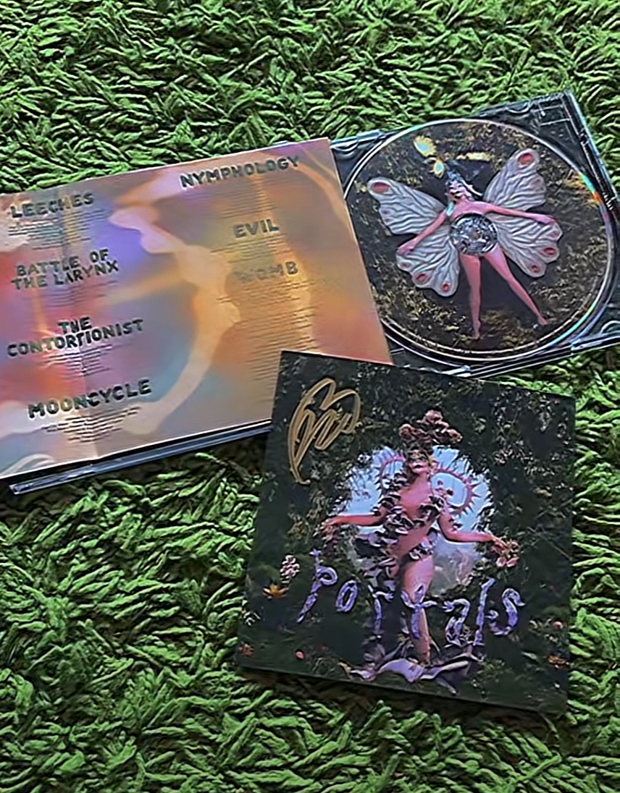
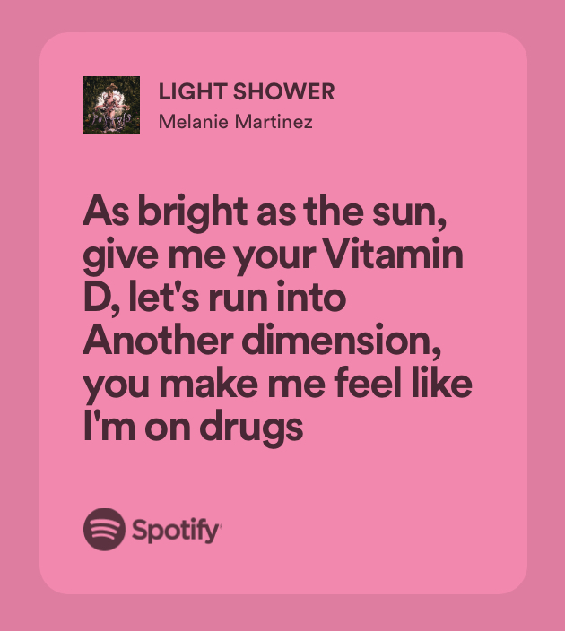
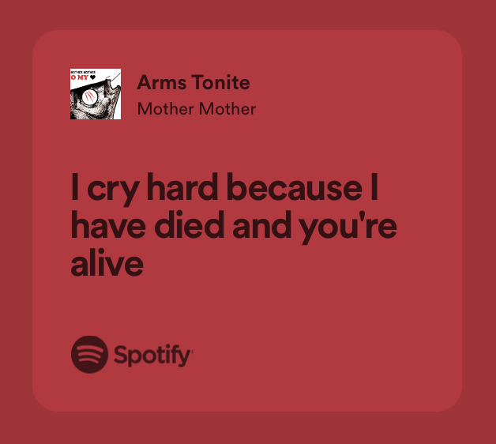
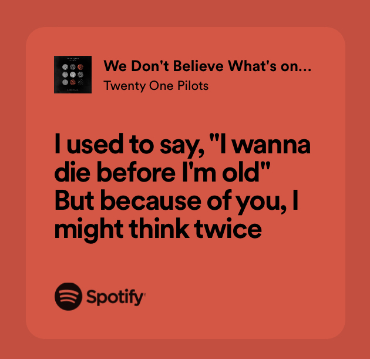
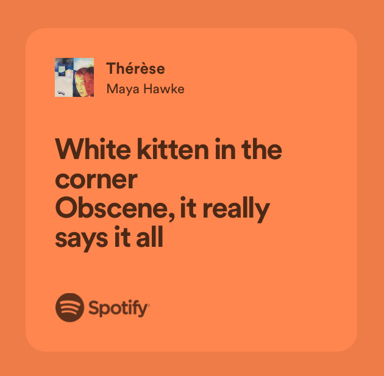

A kedvenc zenéim
Szerintem eléggé sokféle zenét hallgatok. Vivalditól kezdve a Beatlesen keresztül a Mother Mother-ig bármit meghallgatok. Azonban Melanie Martinez az igazi kedvencem. 0-24-ben tudnám hallgatni a hangját!! (A jobboldali képen a legutóbbi albumjának - PORTALS - dedikált cédéje látható, amit vettem magamnak.)
Ebben a táblázatban a négy kedvenc együttesemről olvashatsz.
| énekes/együttes | kedvenc album | kedvenc dal | kedvenc idézet |
|---|---|---|---|
| Melanie Martinez | After School EP | elnézést, de lehetetlen választani |  |
| Mother Mother | O My Heart | Ghosting |  |
| Twenty One Pilots | Blurryface | Lane Boy |  |
| Maya Hawke | Blush | So Long |  |